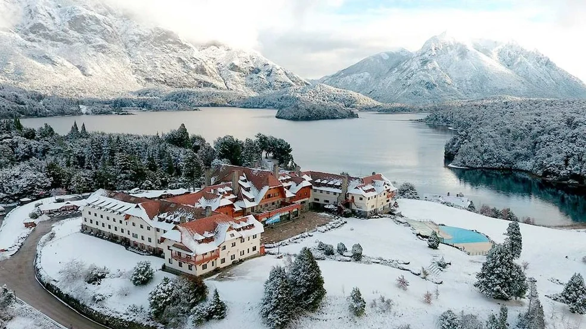
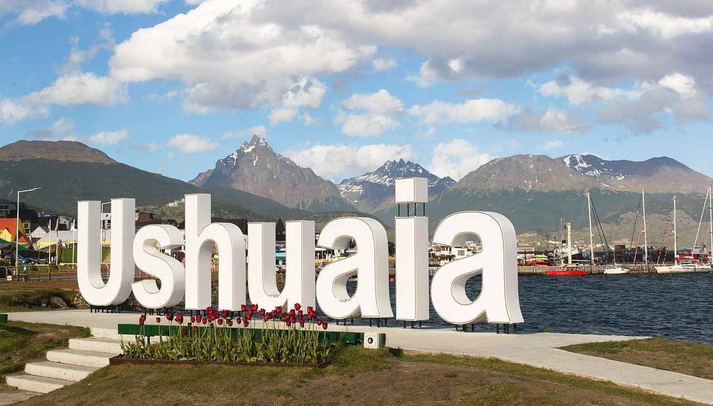

Recorre el sur con nosotros
Conoce nuestros destinos
Paquetes turísticos
Bariloche
Bariloche, oficialmente conocido como San Carlos de Bariloche, cuenta con uno de los escenarios mas bellos de Argentina. Unicado a orillas del lago Nahuel Huapi, es famoso por las actividades de verano e invierno que ofrece y por la producción del mejor chocolate del sur Argentino. Si buscas un equilibrio entre clima agradable y emocionantes actividades, te recomendamos visitar Bariloche durante la primavera y el verano. Los meses de septiembre a febrero brindan una amplia gama de experiencias para todos los gustos.
USD 500
San Martín de los Andes

San Martín de los Andes es una ciudad de montaña, en el sudoeste de la provincia de Neuquén enclavada en la Cordillera de los Andes Argentina, sobre la costa este del lago Lácar, y es la localidad turística más importante de la provincia. Nosotros recomendamos viajar a este precioso lugar en otoño e invierno. Es la temporada indicada para los amantes del esquí, que en el Cerro Chapelco, único centro de esquí de San Martín de los Andes, pueden disfrutar de las 22 pistas con todos los niveles. Se destaca por sus increibles montañas y lagos.
USD 730
Ushuaia
La ciudad de Ushuaia, capital de la Provincia de Tierra del Fuego, Antártida e Islas del Atlántico Sur, se ubica en las costas del canal Beagle, rodeada por la cadena montañosa Martial. Es considerada la más austral del mundo y presenta un relieve irregular: valles glaciarios, turberas y sierras. Recomendamos viajar a principios de otoño, entre fines de marzo y abril, para apreciar la gama de colores en el bosque. A finales de otoño, mayo y junio, son meses considerados como temporada baja, y se destacan los precios bajos y las promociones.
USD 680